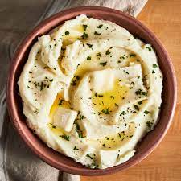

Mashed Potatoes

Ingredients
- Gold Russet Potatoes
- Sour Cream
- Butter
- Garlic
- Salt & Pepper
Steps
- Add potatoes to a medium sized stock pot then cover with water and bring to
a boil. Boil for approximately 20-30 minutes or til fork tender.
- After cooking take your potatoes out and give them a rough chop into large cubes
- Put the large cubed potatoes into your serving dish of choice and use your favorite potato
masher and begin to mash the potatoes. Do so only til they are mostly incorporated.
- After you have mostly incorporated potatoes add one cup of sour cream, one stick of softened butter, 3 cloves of Garlic,
salt & pepper, and finish bringing your potatoes to there final creamy texture.
- Make final adjustments for taste and serve warm